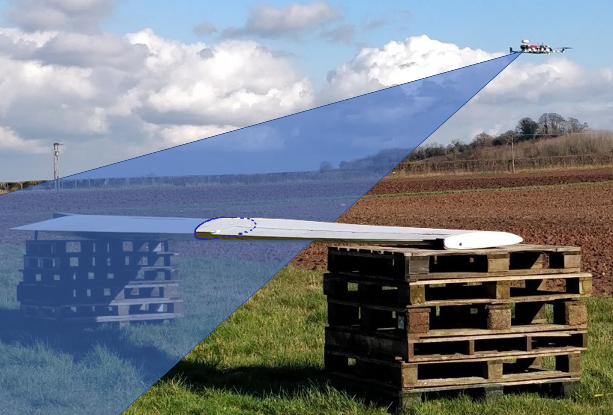
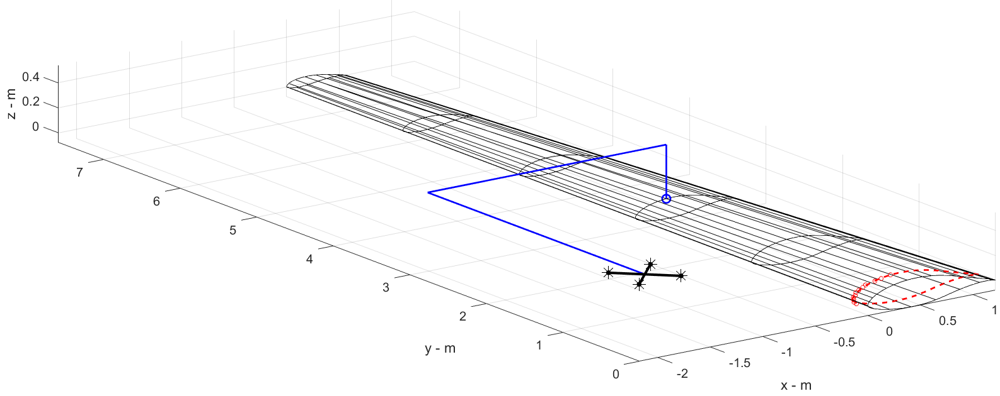

Masters Research
Researching as part of the wider MIMREE project, funded by InnovateUk, my project aimed to produce a drone that could autonomously land an inspection, maintenance and repair robot onto an offshore wind turbine blade. In the advent of the COVID-19 lockdown, I realsied these was a shrinking oppurtunity to record experimental data for this project. So, my focus shifted from software development to flight hardware readiness, allowing for the drone to take measurements which could be processed later. The image above was taken during this test - the shaded blue area shows the swath of the LiDAR unit.
Initiating the project with a thorough literature review served as my introduction to the field of Computer Vision. It was clear that the project required a filtering algotithm to isolate the point clouds pertaining to the target, before attempting to fit the refined, planar data points to the 3D model of the wing. This fit would allow the drone to localise it's position normal to scanning plane, whilst the ranging and sweep angle of the laser range finder allowed the drone to recognise it's position in this plane. The graphic above shows a filtered experimental point cloud (red circles) fitted (dashed red line) to 3D model of the wing (black). The blue lines depict the landing path and final landing zone.